As part of its Robotics and Automation division, Omron corporation maintained a small business unit focused of mobile robotic platforms used in university research and aducation, and in corporate research and devolpment.
I led several initiatives to improve, expand and polish customer documentation and manuals.
- I ensured that C++ library APIs used by customers were comprehensively and accurately documented with consistent, clear API documentation (using Doxygen to generate documentation), that example programs were useful and easy to understand, and wrote various tutorials and knowlege base articles published on the support website.
- I updated and modernized the existing product user manuals. I added information and diagrams and fixed issues based on customer support feedback, with a focus on transforming these manuals into both introductory texts as well as serving as useful reference manuals for customers.
- I co-authored manuals for two new products including introductory explanations, all reference information, diagrams, schematics and step-by-step instructions, and safety information.
- I helped create the manual for a new product variant by adapting an existing manual, making accurate changes and adapting scope of information included to fit the different target market for this alternate product variant, in co-operation with the technical writing and engineering staff of a different company division.
- Led the creation of a library of modular short guides for each optional accessory available for products, with key information, quick start guide and links to additional documentation.
- Helped create and later led the maintainaince of a comprehensive online knowlege base of information and infrastructure for distributing above documentation along with software releases and updates. (Based on MediaWiki with some customizations, e.g. to automate page changes as part of software package release workflow.) A partial archive of this site is available at The Internet Archive. Topics in this knowlege based ranged from answers to frequently asked questions, step-by-step tutorials and guides for certain tasks, how to troubleshoot common software, computer OS and eletrical problems, how to configure Windows or Linux to work with various hardware devices, technical details of the robot hardware and electronic features, archives of all current and past manuals for robots and third party devices, pages from which users could download our software packages, and third party software and drivers, news, links to join email discussion lists, and a form to contact technical support.
- Worked closely with MobileRobots customer support, hardware engineering, production/assembly, and marketing departments, and Omron/Adept technical documentation and other departments.
- Worked with customer support staff to moderate and administer user discussion lists (specific related to development software).
- Covered for customer support staff on hardware customer problems when neccesary, expanded knowlege of hardware aspects of products.
- Customer documentation was created using Doxygen (API docs), MS Word, Madcap Flare, and ReStructured Text (product manuals and accessory guides), and customized MediaWiki installation (knowlege base and document/software distribution support site.)
Copies and excerpts from these manuals and documents are available privately upon request: (Omron retains full copyright of these materials.)
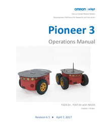
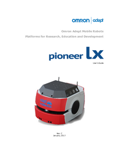
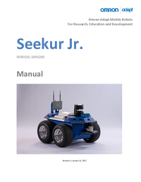

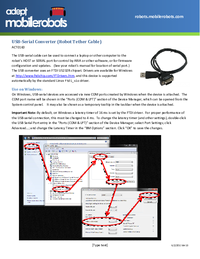 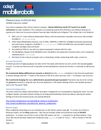
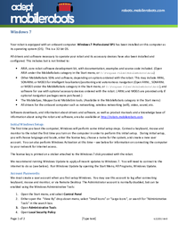
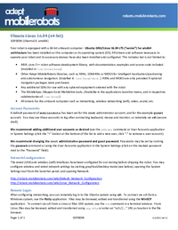
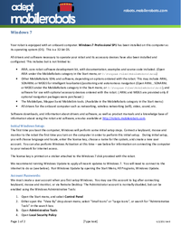
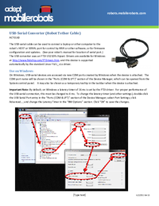
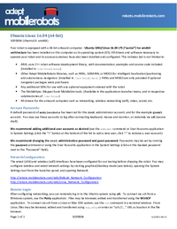
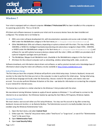
A partial archive of the public Omron/Adept MobileRobots support knowlege base and downloads website is available at The Internet Archive. I was reponsible for maintaining, organizing and the majority of the writing on this knowlege base website.